One of the courses that I most enjoyed during my time at UWaterloo was MTE 544 - Autonomous Mobile Robots. It inspired
me to want to build my own mobile robot. Learning more about robotics, ROS, and autonomous navigation is one of the main
reasons behind this project. In order to do this, I would need a vehicular platform through which this learning can
be done. As well, taking into account my other interests such as nerf blasters, it would also be interesting to have a
mobile nerf turret. As such, this project would need to be a multi-terrain robotic platform, on which future projects,
whether they be a nerf turret, or an autonomous mobile robot can be built upon.
Design Parameters
There were a few design parameters that were set for this project. In no particular order, these are as follows:
Needs to be inherently stable (i.e. it should be able to balance without additional hardware or software)
Should have at least 3 degrees of freedom to allow for versatility in future projects
Should be multi-terrain
Stay within a budget of $400 $600 (not including 3D printing)
Needs to have a platform/area on which additional hardware (i.e. LIDAR, Nerf Turret, Robotic Arm, etc.) can be mounted
System should be able to support its own weight as well as have capacity for additional hardware
Parts should be either 3D printed or off the shelf
The first four parameters defined the type of robot for this project, while the rest ensured it would be successful. Based
on these parameters, a decision matrix was created to decide what type of robot would best fit this project. This is shown
below:
In terms of cost, the deciding factor was the number of motors required for each type of robot. The price, of the various
motors required, ranges from 12-20 dollars each. For simplicity, I've considered this to be about the same price range. As
such the more motors, the more costly. The tank costs the least with only two motors. In second is the holonomic vehicle
with 3 motors in a kiwi drive configuration. Then the aerial drone with 4 motors in a quadcopter configuration and the
hexapod in last due to each leg requiring 3 motors for a total of 18 motors minimum.
Concerning the robot being multi-terrain, the aerial drone is the best as it can just fly over any terrain, followed by the
legged robot, due to its great maneuverability. Then comes the tank due to the tank treads allowing it to traverse a wider
variety of terrain. Lastly, is the holonomic robot as it would only be able function on smooth flat surfaces.
Regarding degrees of freedom, the aerial drone and the hexapod both have 6 degrees of freedom and are thus the best options.
The holonomic vehicle has 3 degrees of freedom putting it in third, with the tank taking last place with only 2 degrees of
freedom.
In terms of stability/balance, both the holonomic vehicle and the tank are the best as their configuration means they are
unlikely to tip over or require extra hardware/software to prevent them from tipping over. The hexapod comes in third, due
to its tripod gait which grants it increased stability, but due to the nature of legged robots, changes in terrain height can
cause stability issues. In last is the aerial drone, as some sort of flight controller is necessary to ensure, it can
stably fly/hover in the air.
After calculating the scores, it was seen that the best option was the aerial drone. However, in the end the next best choice
was taken, due to the fact that compared to the other options, the aerial drone is not inherently stable. This was a deal
breaking requirement and as the drone did not meet it, the second option was chosen. As well, I don't have access to any
large open areas required for testing or using an aerial drone. Furthermore, I currently lack the skills to pilot a drone,
and did not feel it would be appropriate to learn to do so with my own custom drone.
Sourcing Parts
Before any design work can begin, a few critical parts needed to be sourced. These parts include the servos, battery,
microcontroller, and ball bearings. These parts will be bought off the shelf and will be used to dictate the sizing of
various components of the robot. While these components may change throughout the design phase, it is a good starting
point from which the design can be made. Through the use of parametric design, measurements can be easily changed to fit
the new parts, adjusting the design as needed. The parts that were chosen are shown in the picture below, along with an
explanation for why these parts were chosen.
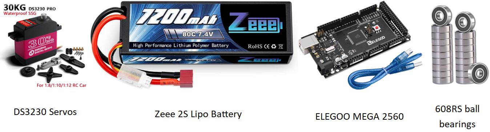
In terms of servos, this hexapod will have 3 per leg, for a total of 18. These servos will need to have enough torque to
support the robot as well as rotate enough to allow for a wide range of movement. The problem with choosing a servo in the
beginning is that you can't know the amount of torque required without knowing the weight and configuration of the hexapod.
As such a relatively high torque servo, the DS3230,
was chosen. This supposedly has 30 kg·cm of torque (at 5v), which should be more than sufficient. Math will be done
when a finalized, or semi-finalized design has been completed to ensure that these servos are adequate.
Regarding the battery, it should be as compact as possible, and be able to provide at least 18 amps of current. Most servos
can pull up to an amp or more when under loaded conditions, leading to this condition. I ended up choosing the
Zeee 2S LiPo Battery
with 7.4V, 80C, and 7200mAh specifications. Based on this rating, it can supply up to 576 amps, which is more than plenty.
Unfortunately, the voltage is a little too high for the servos (max 6.8v) which preferably, would be run at 5-6v to ensure
high torque, without damaging the servos. Other batteries that I've found which have the correct voltage, don't specify the
maximum current output. As such, I've decided to go with this battery for now, while continuously being on the lookout for
better alternatives. If a better battery is found, the CAD model can easily be updated, by changing the relevant variables.
The microcontroller and the ball bearings were the easiest to determine. An
ELEGOO MEGA 2560,
will be used as the microcontroller. The Mega was chosen, as it has more memory, which will be important if inverse
kinematic calculations need to be done. As well, it has more i/o ports which is critical, as we need at least 18 for each
servo and more, if sensors or transmitters are to be added. The Elegoo variety was chosen over the Arduino, due to the fact
that both boards, are equal regarding their specifications but the Elegoo costs half as much as the Arduino. Lastly, the
608RS ball bearings
will be used, due to the fact that these are very common and cheap while meeting the required function.
CAD Model
The CAD model should be designed in such a manner that modifying a few variables will cause all the relevant parts to update.
In other words, this should be a parametric and a top-down design. A top-down design is usually done at the assembly level,
and parts are made such that they reference external dimensions. An advantage with this is that less rework is required when
design changes occur. These changes could be things such as changing the length of various limbs or moving a servo. In
bottom-up design, you would need to go through each part and rework them to ensure they fit the new changes. In top-down
design, changing one thing will cause all the parts to update to fit the new changes.
Normally, this is done within an assembly by creating a layout sketch and having everything reference it. However, when
working at the assembly level, it is important to not create circular references or mating conflicts, which can cause
unexpected behaviours. As this is a personal project, I've opted to start with a multi-body part instead of an assembly, so
as to not have to deal with this issue. Upon completion, the various bodies can then be saved individually and then put into
an assembly.
Some design decisions during the making of the CAD model include the leg location, body shape, and the leg anatomy. The
body shape and leg locations are related. There are three routes that can be taken with a hexapod; legs that are positioned
in a linear pattern, circular pattern, or somewhere in between. I've opted to go with the circular pattern as it should make
programming the walking slightly easier than the linear pattern, especially in terms of turning. The body shape needed to be
something that allowed for a circular pattern of legs. As such an octagonal shape was chosen. This allowed for a circular
pattern and also provided some space between the left and right sides in which sensors may be located. The legs were based
off of the anatomy of a real spider (see image below). It was simplified to use 3 joints/motors per leg to
reduce complexity and cost. The hexapod legs stop at the tibia, which removes 2 joints. The joint (in the top view) between the patella and
the tibia was also removed as this movement is covered by the joint at the coxa/trochanter. With these design choices made,
the layout sketches were then created. These are shown below.
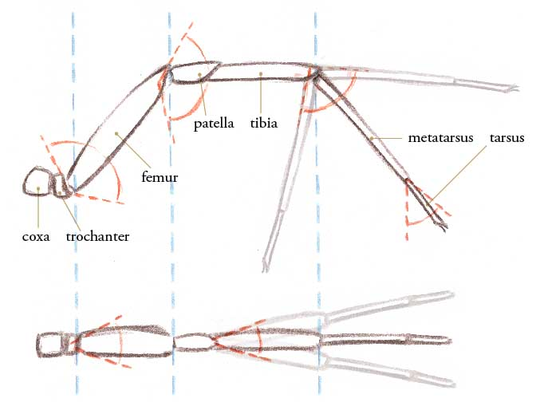
Side view and top view of a spider's leg showing range of movement. Retrieved from
John Muir Laws.
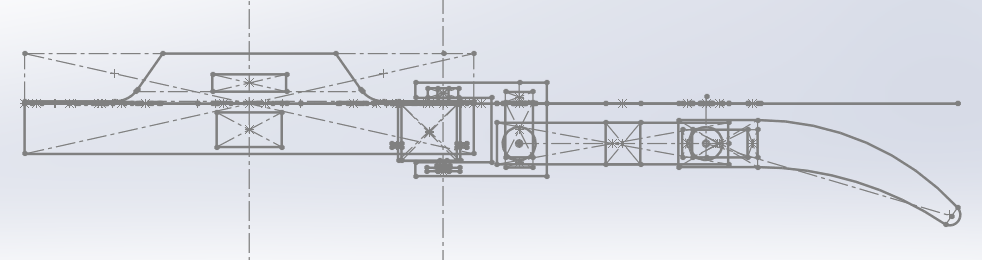
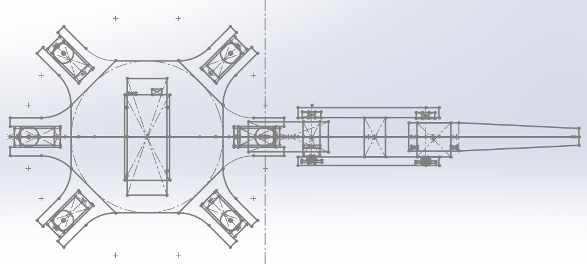
Side and top views of the layout sketches
Using these sketches, each part was created sequentially working from the center outwards. To ensure clarity and to avoid
creating unnecessary references, the rollback feature of the feature tree was used to keep all actions (i.e. cuts, extrudes,
fillets, etc.) together. A screenshot of the feature tree organized into folders by part is shown below:
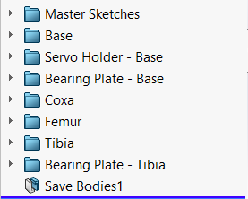
Once the multibody part was finished, each body was exported as a separate part and then put together into an assembly.
Subassemblies were used where appropriate, along with circular patterns. Find below the various views of the final design
of this iteration.
To make the hexapod walk, we need to be able to determine the servo angles required to reach a certain position. To do this
we need an inverse kinematic model, which will take a coordinate in x, y, and z and return the angles for each servo. We
also need the forward kinematics to be able to determine the current position based on the servo angles. Since, I have
chosen a symmetrical design, I only need to be able to calculate values for the first leg. The values for the rest of the
legs can be determined by completing a rotation about Z-axis of the base origin aka the global origin. The first leg,
is defined as the right horizontal leg (aka when θ = 0°). The rest of the legs are numbered in a
counter-clockwise manner (i.e., leg 2 is when θ = 45°). The picture below showcases the angle offsets for each
leg.
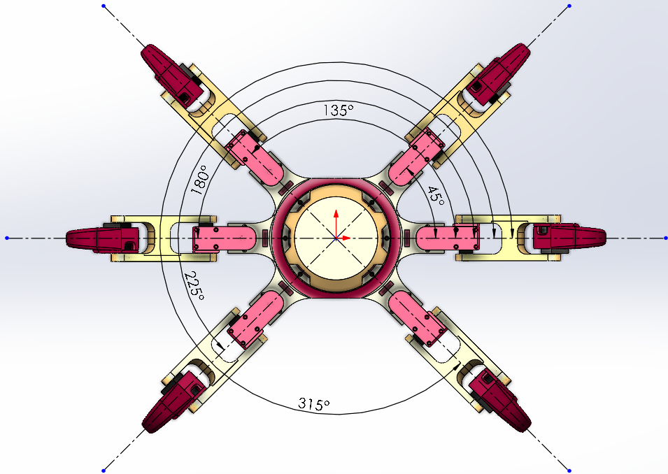
Now that we've determined that we only need to focus on Leg 1, we need to be able to rotate coordinates describing the
position of any leg n in the base frame to the equivalent position for leg 1. To do this we can use the rotation matrix
shown in Equation 1 below. Note that to move from Leg 1 to any Leg n, we can make theta (θ) positive. This is due
to the fact that the negative direction is clockwise.
\begin{equation}
T_{LegnToLeg1} = \begin{bmatrix} cos(-θ) & -sin(-θ) & 0 & 0 \\ sin(-θ) & cos(-θ) & 0 & 0 \\ 0 & 0 & 1 & 0 \\ 0 & 0 & 0 & 1 \end{bmatrix}
\end{equation}
The last thing we need to do before moving onto the derivation, is to look at how the legs moves. Each leg has 3 joints,
which can move from 0° to 180°. The motion of each joint of the legs are shown below, along with its variable name.
Note that 0° is the 6 o'clock position, while the 12 o'clock position is 180°. These values are what will be fed to
the servos during operation, or to the CAD model for animations.
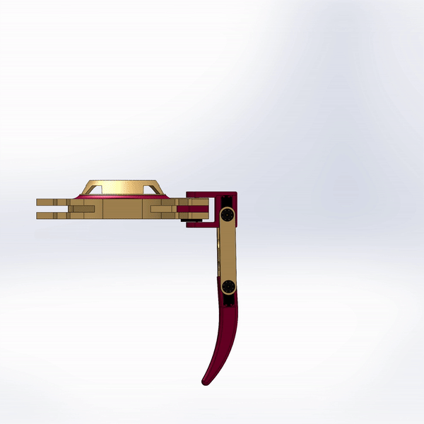
Motion of the Femur. Angle denoted by a1.
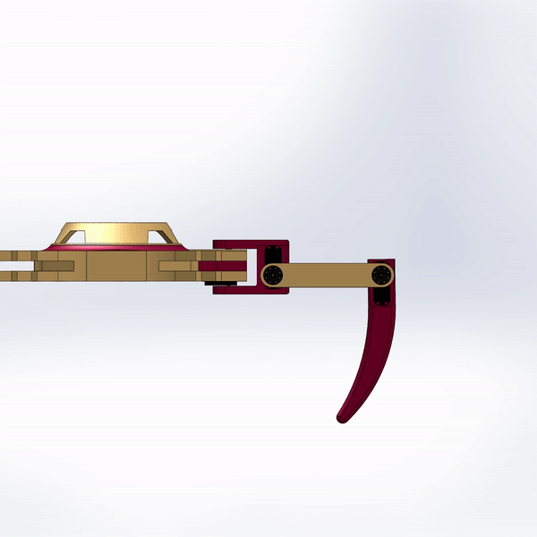
Motion of the Tibia. Angle denoted by a2.
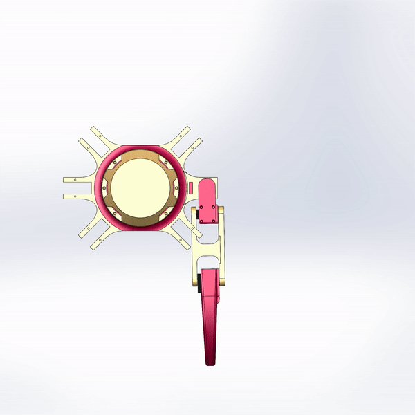
Motion of the Coxa. Angle denoted by a3.
Now we can start the derivation of the kinematic equations. As it is the easier of the two, let's start with the forward
kinematics. To do this, we can simplify the leg by representing it with just a few lines, and then analyzing the side and
top views. These diagrams are shown below. Please click on the image to open a larger version (in a new tab) if need be.
We can making some observations about these diagrams. Note that the global/base origin differs from the part origin in the
CAD model. This is because while designing, it made sense to have the origin be at the centre. However, while deriving the
equations, it made much more sense to have the origin be collinear with the coxa joint. As well, the angles for
each joint are different from the actual angles as defined earlier. As such, we'll need a way convert between the two
angles. Equations 2, 3, and 4 below showcase the way to convert between the actual angles (a_) to the forward kinematics
angles (q_).
\begin{equation}
q1 = a1 - 90°
\end{equation}
\begin{equation}
q2 = a2 - 90°
\end{equation}
\begin{equation}
q3 = a3 - 90°
\end{equation}
Now let's start deriving the equations. We'll look at the side view first. For our convenience, we'll round the Tibia length
to 189 mm. As well, we'll use the exact values directly in our equations, although in the code, it shall be replaced by the
corresponding variable names to allow for easy modifications if these lengths change. Note, that this view only considers
the scenario when the coxa angle is in its initial position (q3 = 0° or a3 = 90°). This is why the horizontal
length is labeled as x'. We'll determine the general equation when we look at the top view. The equations are as follows:
\begin{equation}
x' = 140 + 55 + 135cos(q_3)+ 189cos(q1+q2)
\end{equation}
\begin{equation}
z = 135sin(q_3)+ 189sin(q1+q2)
\end{equation}
Now let's look at the top view. From the diagram, we can see that part of the leg is represented by H. This is the
x' component (Equation 5) that we derived from the side view, but without the base to coxa length. Thus, we get the
following equations:
\begin{equation*}
H = x' - 140
\end{equation*}
\begin{equation*}
H = 55 + 135cos(q_3)+ 189cos(q1+q2)
\end{equation*}
\begin{equation*}
x = 140 + Hcos(q3)
\end{equation*}
\begin{equation}
x = 140 + [55 + 135cos(q_3)+ 189cos(q1+q2)]cos(q3)
\end{equation}
\begin{equation*}
y = Hsin(q3)
\end{equation*}
\begin{equation}
y = [55 + 135cos(q_3)+ 189cos(q1+q2)]sin(q3)
\end{equation}
Thus, the x, y, and z positions of leg 1 can be expressed by Equations 7, 8 and 6, respectively. To get the positions of
the other legs, this value can be rotated by the corresponding amount using matrix in Equation 1 above. Now, let's move
onto the inverse kinematics. Once again, we can make diagrams to help us derive the equations. These diagrams are shown
below. Please click on the image to open a larger version (in a new tab) if need be.
Like with the forward kinematics, we can making some observations about these diagrams. Note that this time, we have two
additional coordinate frames. This is to help us simplify the equations that need to be derived. The angles for each joint
are, once again, different from the actual angles. Note that the q_ angles here are not necessarily equivalent to the
q_ angles from earlier. The conversion from the q_ angles to the actual angles, a_, is shown below.
\begin{equation}
a1 = q1 + 90°
\end{equation}
\begin{equation}
a2 = 90° - q2
\end{equation}
\begin{equation}
a3 = q3 + 90°
\end{equation}
Now let's derive the equations, starting with q3 in the top view. We know X and Y as that is the position for which we want
to find the angles. As such we can get the coxa angle using the trigonometric ratios for right triangles. The reason for
the subtraction of 140 mm from X is due to the translation to move from the Base frame to the Coxa frame.
\begin{equation}
q3 = tan^{-1} \left( \frac{Y}{X-140} \right)
\end{equation}
Looking at the side view, we can first start by moving the coordinates to the equivalent position, if the coxa was at
90 degrees. This can be done with the use of a transformation matrix. To make this transformation matrix we need to first
rotate the coordinate by q3 (which we found above). As we are moving clockwise, it becomes -q3. Then we can translate the
coordinates by the length between the coxa and femur, which is 55 mm. This transformation matrix is shown in Equation 13.
Using this matrix, we can transform the coordinates using Equation 14 below. Note that (x', y', z') is the coordinates
after they have been rotated to leg1 (using the rotation matric shown in Equation 1) and translated to the coxa.
\begin{equation*}
T_{CoxaToFemur} = T_{Translation} * T_{Rotation}
\end{equation*}
\begin{equation*}
T_{CoxaToFemur} = \begin{bmatrix} 1 & 0 & 0 & -55 \\ 0 & 1 & 0 & 0 \\ 0 & 0 & 1 & 0 \\ 0 & 0 & 0 & 1 \end{bmatrix} \begin{bmatrix} cos(-q3) & -sin(-q3) & 0 & 0 \\ sin(-q3) & cos(-q3) & 0 & 0 \\ 0 & 0 & 1 & 0 \\ 0 & 0 & 0 & 1 \end{bmatrix}
\end{equation*}
\begin{equation}
T_{CoxaToFemur} = \begin{bmatrix} cos(-q3) & -sin(-q3) & 0 & -55 \\ sin(-q3) & cos(-q3) & 0 & 0 \\ 0 & 0 & 1 & 0 \\ 0 & 0 & 0 & 1 \end{bmatrix}
\end{equation}
\begin{equation*}
\begin{bmatrix} x'' \\ y'' \\ z'' \\ 1 \end{bmatrix} = T_{CoxaToFemur} \begin{bmatrix} x' \\ y' \\ z' \\ 1 \end{bmatrix}
\end{equation*}
\begin{equation}
\begin{bmatrix} x'' \\ y'' \\ z'' \\ 1 \end{bmatrix} = \begin{bmatrix} cos(-q3) & -sin(-q3) & 0 & -55 \\ sin(-q3) & cos(-q3) & 0 & 0 \\ 0 & 0 & 1 & 0 \\ 0 & 0 & 0 & 1 \end{bmatrix} \begin{bmatrix} x' \\ y' \\ z' \\ 1 \end{bmatrix}
\end{equation}
For the following equations we only need the x'' and z''. x'' is labeled as D in the diagram above, while z'' happens to be
just z. Using trigonometric ratios along with the cosine law, we can solve for the intermediate values shown in the
diagram.
\begin{equation}
a = tan^{-1} \left( \frac{Z}{D} \right)
\end{equation}
\begin{equation*}
L = \sqrt{D^2 + Z^2}
\end{equation*}
\begin{equation*}
b = cos^{-1} \left( \frac{L^2 + 135^2-189^2}{2L(135)} \right)
\end{equation*}
\begin{equation*}
b = cos^{-1} \left( \frac{ \left( \sqrt{D^2 + Z^2} \right)^2 + 135^2-189^2}{2L(135)} \right)
\end{equation*}
\begin{equation}
b = cos^{-1} \left( \frac{D^2 + Z^2 + 135^2-189^2}{2 \left( \sqrt{D^2 + Z^2} \right) (135)} \right)
\end{equation}
\begin{equation*}
c = cos^{-1} \left( \frac{135^2 + 189^2-L^2}{2(135)(189)} \right)
\end{equation*}
\begin{equation*}
c = cos^{-1} \left( \frac{135^2 + 189^2- \left(\sqrt{D^2 + Z^2} \right)^2}{2(135)(189)} \right)
\end{equation*}
\begin{equation}
c = cos^{-1} \left( \frac{135^2 + 189^2-(D^2 + Z^2)}{2(135)(189)} \right)
\end{equation}
Using Equations 15, 16 and 17, we can determine the remaining two angles as seen below.
\begin{equation}
q1 = b - a
\end{equation}
\begin{equation}
q2 = 180 - c
\end{equation}
The angles from Equations 12, 18, and 19 can then be converted to the actual angles using Equations 9, 10, and 11 above.
Using these equations a script was created in MATLAB (which can be found on my GitHub)
to determine the workspace of the Hexapod legs. This would be the area that each leg can reach based on its limitations.
The figure below showcases the workspace of the Hexapod's legs when the Hexapod's base origin is 100 mm above the ground
(aka z = -100 mm). Each leg is denoted by a different colour. Note that certain areas are overlapping, which means we need
to be careful of potential collisions.
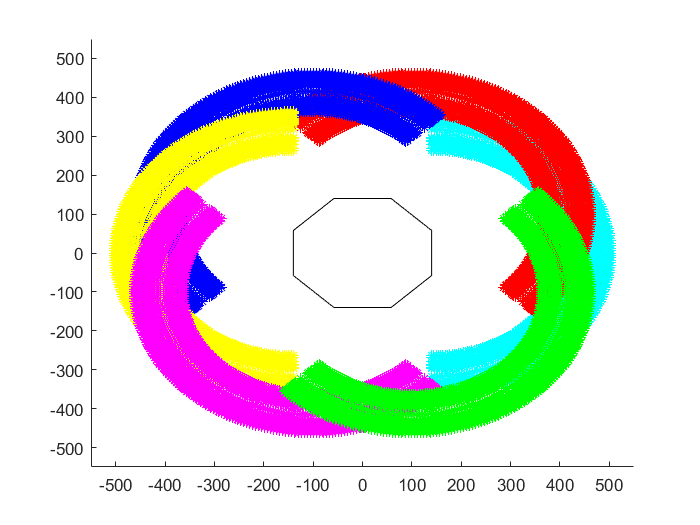
Workspace of all the Legs
We can define a step length and an origin for the feet of each leg. The origin should be in the center of the workspace,
and the circle formed with this origin should be fully within the boundaries of the workspace. The diameter of this circle
is the step length. The step length came out to be 100 mm. The various workspaces along with the bounded area where a step
is possible is shown below. By limiting a step to this circular area, we can prevent collisions as well as mathematical
errors from trying to use the inverse kinematic equations for a position that is impossible to reach.
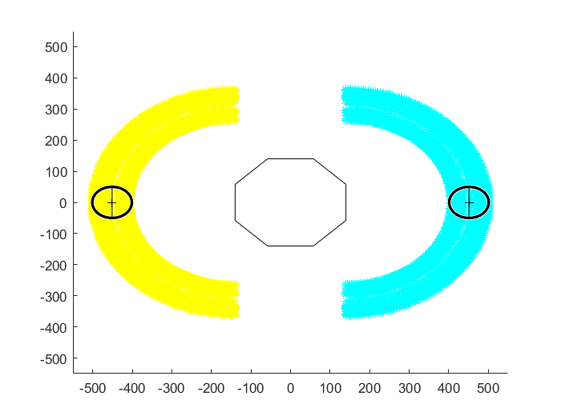
Legs 1 (right) and 4 (left)
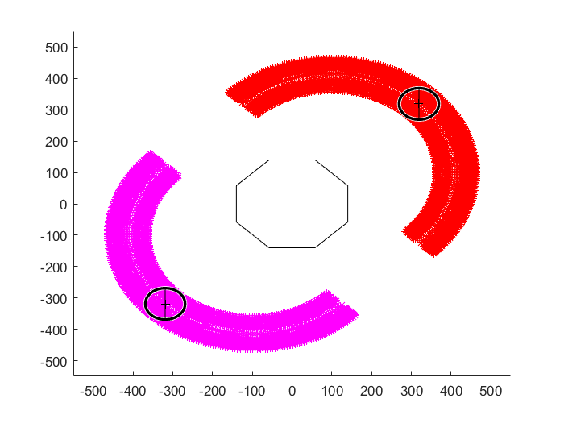
Legs 2 (top-right) and 5 (bottom-left)
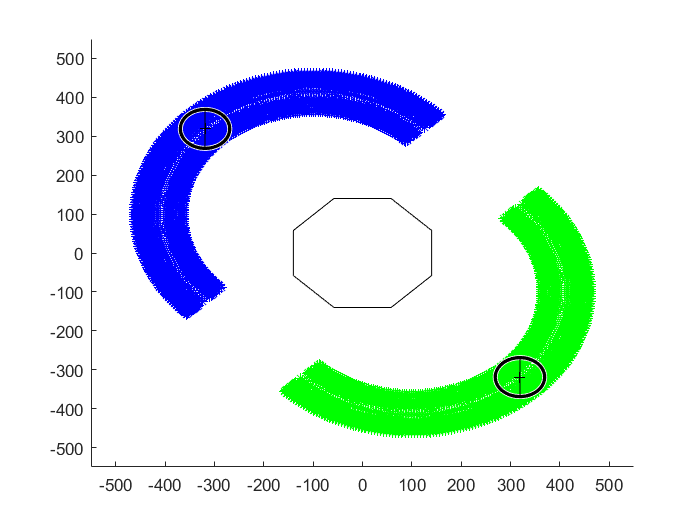
Legs 3 (top-left) and 6 (bottom-right)
To be able to make the hexapod walk, we need at least 4 coordinates to transition between. These are: 1) the
origin, 2) the forward position, 3) the origin but translated vertically, and 4) the backward position. Note that the z
value for 3rd coordinate is z = 0 mm, while for the rest is z = -100 mm. Using the MATLAB script, the required angles for
these positions were determined. Then by inputting these angles into the Mate Controller in SolidWorks, a motion study
animation can be created showcasing the hexapod walking forward. Of course, in reality, when making the Hexapod walk, we
will need more than 4 points to ensure a smooth gait. This can be done by using something like a Bezier curve to
interpolate points on the walking path. However, this interpolation is done for us by SolidWorks. The walking animation
from various views is shown below.
Isometric View
Side View
Top View
If we want to be able to take a larger step, we can still determine a possible path which can allow us to do this without
collisions or errors. For a step length of 200 mm moving forward, the origin of legs 2, 3, 5 and 6 will need to moved.
As well, note that this is only possible in certain directions. The workspaces of legs 1 and legs 2 along with the new
path are shown below. The corresponding paths for the remaining legs can be found by rotating these two workspaces.
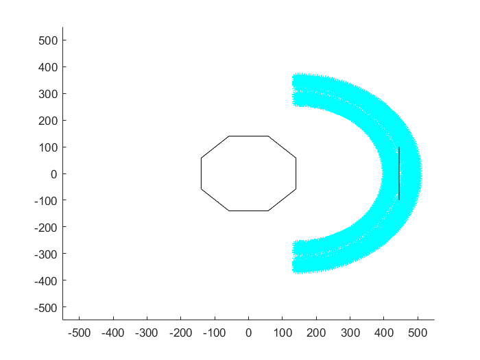
Leg 1 path with a step length of 200 mm
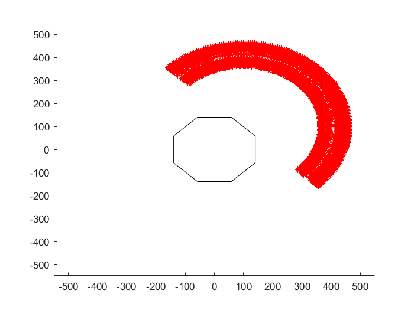
Leg 2 path with a step length of 200 mm
The animations for when the Hexapod uses a larger step length is shown below.
Isometric View
Side View
Top View
Torque Calculations
While we have a plausible design, as well as a working kinematic model, we still need to ensure that the motors that were
selected for this robot have sufficient torque. To do so, we have to create a simplified free-body diagram and solve for
the unknowns. We will take a look at the situation where the robot has lifted up 3 of its legs, and is standing on only its
3 other legs. We will consider this scenario as at any point in time, the robot will always have 3 legs on the ground. The
image below showcases the scenario that we will be considering.
Based on this image, we can make the observation that the left and right side of robot are not equal due to the fact that
there is only one leg supporting the left side, while there is 2 for the right. As such, the forces on the left leg will
be higher than that on the right legs. As well, as the two legs on the right side are symmetrical in their position, we
can assume that the forces on them are similar. With these assumptions and observations, we can create a free-body diagram.
This is shown below.
In this diagram, Fg is the force due to gravity and is calculated based on the weight of the model in SolidWorks.
This comes out to be about 4.75 kg. This is a rough estimate, as the weights of 3D printed parts and even off the shelf
parts will vary slightly from the CAD. As well, the weight of the wires is not included in this measurement. Using this
weight the force of gravity is calculated below:
\begin{equation*}
F_g = mg
\end{equation*}
\begin{equation*}
F_g = (4.75 kg)(9.81 m/s^2)
\end{equation*}
\begin{equation}
F_g = 46.5975 N
\end{equation}
Now that we have the value of Fg, lets continue with determining the required torque. As mentioned earlier (as
well as denoted by the colours), N2 = N3, which also leads to T3 = T5 and
T4 = T6. We only need to determine the maximum torque, as that is the value we will use to choose
our actuator. Since T1 > T3 and T2 > T4, we will only need to determine
T1 and T2.
Let's first start by doing a force summation. In this situation, we know that the robot is not moving up or down, and thus
the forces need to sum to zero. This gives us Equation 20 below.
\begin{equation*}
\sum F = F_g - N_1 - N_2 - N_3
\end{equation*}
\begin{equation*}
0 = F_g - N_1 - N_2 - N_2
\end{equation*}
\begin{equation}
F_g = N_1 + 2N_2
\end{equation}
We know the weight but don't know either of the normal forces. To calculate these we can take a moment about end of the
left leg. This way we can ignore N1 temporarily and create an equation where we have only one unknown. The
diagram below, showcases the horizontal distance from the end of the leg. This is used to calculate the moment caused by
each of the forces. Similar to before, the sum of moments is also zero, as the robot is not rotating.
\begin{equation*}
\sum M = M_{F_g} - M_{N_2} - M_{N_3}
\end{equation*}
\begin{equation*}
0 = M_{F_g} - M_{N_2} - M_{N_2}
\end{equation*}
\begin{equation*}
M_{F_g} = 2M_{N_2}
\end{equation*}
\begin{equation*}
(405 mm)F_g = 2(691.38 mm)N_2
\end{equation*}
\begin{equation*}
N_2 = \frac{(405 mm)F_g} {2(691.38 mm)}
\end{equation*}
\begin{equation*}
N_2 = \frac{(405 mm)(46.5975 N)} {2(691.38 mm)}
\end{equation*}
\begin{equation}
N_2 = 13.6481 N
\end{equation}
Using the result shown by Equation 22, we can find the value of N1, using Equation 21 from earlier. This
results in:
\begin{equation*}
F_g = N_1 + 2N_2
\end{equation*}
\begin{equation*}
N_1 = F_g - 2N_2
\end{equation*}
\begin{equation*}
N_1 = 46.5975 N - 2(13.6481 N)
\end{equation*}
\begin{equation}
N_1 = 19.3013 N
\end{equation}
Now that we know all the forces, we can calculate the necessary torques by isolating those joints and finding the moments
at those locations. The diagram below showcases the leg isolated from the rest of the hexapod and the distance values to
each joint.
Let's start with T1, which is the moment about the joint between the femur and the tibia. First, let's make
another free-body diagram, isolating this joint. This is shown below. Note that we're only concerned about N1
as that is the bigger of the two normal forces, and since we want to know if this motor is sufficient we only care about
the largest force.
\begin{equation*}
\sum M = (80.99 mm)N_1 - T_1
\end{equation*}
\begin{equation*}
0 = (80.99 mm)N_1 - T_1
\end{equation*}
\begin{equation*}
T_1 = (80.99 mm)N_1
\end{equation*}
\begin{equation*}
T_1 = (80.99 mm)(19.3013 N)
\end{equation*}
\begin{equation*}
T_1 = (0.08099 m)(19.3013 N)
\end{equation*}
\begin{equation*}
T_1 = 1.5634053 N \cdot m
\end{equation*}
\begin{equation}
T_1 \approx 1.6 N \cdot m
\end{equation}
Next let's find the moment about the joint between the femur and the coxa to determine T2. We can once again
make a free body diagram, isolating this joint.
\begin{equation*}
\sum M = (210 mm)N_1 - T_2
\end{equation*}
\begin{equation*}
0 = (210 mm)N_1 - T_2
\end{equation*}
\begin{equation*}
T_2 = (210 mm)N_1
\end{equation*}
\begin{equation*}
T_2 = (210 mm)(19.3013 N)
\end{equation*}
\begin{equation*}
T_2 = (0.21 m)(19.3013 N)
\end{equation*}
\begin{equation*}
T_2 = 4.053273 N \cdot m
\end{equation*}
\begin{equation}
T_2 \approx 4.1 N \cdot m
\end{equation}
The servo motors that I choose at the start of this project has a torque of 29.5 kg·cm of torque (at 5v). This is
an unconventional unit and isn't necessarily correct, but we'll work with it since that's what is provided. To compare we
can convert these units into the more conventional N·m. The kg in this unit should more accurately be expressed as
kgf as it is the force on a 1 kg weight in standard Earth sea-level gravity. As such, the conversion can be
done as follows:
\begin{equation*}
T_{servo} = 29.5 kg_f cm
\end{equation*}
\begin{equation*}
T_{servo} = (29.5 kg_f \cdot cm) \left( \frac{9.81 N} {1 kg_f} \right) \left( \frac{1 m} {100 cm} \right)
\end{equation*}
\begin{equation*}
T_{servo} = 2.89395 N \cdot m
\end{equation*}
\begin{equation}
T_{servo} \approx 2.9 N \cdot m
\end{equation}
Based on the values from Equations 24, 25 and 26, it seems that this servo is sufficient for the tibia, but not for the
femur. This leaves us with three potential solutions: 1) reduce the weight of the hexapod, 2) get a more powerful servo
for the femur, or 3) change the gait from a tripod gait (where three legs are on the ground), to one where 4 or even 5 legs
are on the ground at all times. This would spread the forces between the legs, reducing the torque requirement.
Options 2 is unlikely, as servos with higher torque cost more and will also required more power. Not to mention, they also
weigh more. As such, we'll use options 1 and 3. Weight can easily be reduced through making parts thinner, and also by
cutting away material. We can also prove that option 3 is viable using a similar method as above. However to simplify the
math, we'll assume that the weight is equally distributed along the legs and we'll focus solely on the femur servo, as it
is clear that it experiences the most torque.
\begin{equation*}
T_{femur} = (0.21 m) \left( \frac{F_g} {{Number \; of \; legs \; on \; ground}} \right)
\end{equation*}
\begin{equation}
T_{femur} = (0.21 m) \left( \frac{46.5975 N} {{Number \; of \; legs \; on \; ground}} \right)
\end{equation}
Using equation 27, we can calculate the required torque for when we have 4 or 5 legs. This comes out to be approximately
2.45 N·m and 1.96 N·m respectively. Both of this is less than the torque that the servo can provide. Of course
this method is slightly less accurate, which can be seen by calculating it for 3 legs, which comes out to be 3.26 N·m.
This is lower than the 4.1 N·m we calculated earlier. However, it is enough to prove that these servos can provide the
necessary torque for a gait where 5 legs are on ground (wave gait) and potentially for a gait with 4 legs (ripple gait).
Combining this with option 1) reducing weight, these motors will be sufficient for our use case.
Budget
As this is a personal project, managing the budget is important to ensure that the cost isn't going out of control. This
project will have additional expenses from the fact that it will be done at home. This means stable items such as
screws or wires will need to be bought in bulk even if I don't need a lot. As well, I'll also need to buy equipment (i.e.
soldering iron, or a LiPo charger). The budget was originally set at $400, but has been increased to $600 as I severely
underestimated the cost of the motors, which costs more than $200. The image below breaks down the costs of the various
items that need to be bought for this project. This breakdown only features, the parts needed to build the hexapod, without
any of the equipment. I am currently looking for ways to use equipment for free such as the library's equipment lendery. As
well, note that the prices do not include shipping or tax. The total cost comes out to be $440.48.
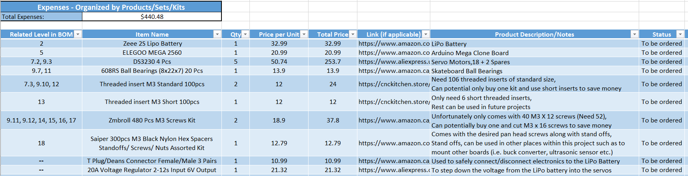
Overview of what items need to be bought. Please click on the image to open a larger version in a new tab.
The estimated price to 3D print each part has also been calculated. This has been estimated using the assumption that I will
be printing it myself, without the use of a third party printing service. As such, I've based the estimate on the price for
1kg of Amazon Basics SILK PLA 3D Printer Filament.
The price breakdown is shown in the image below. Note that for small parts, a 50% infill was used if it doesn't experience
any stress, while those that do had 100% infill. For larger parts, a variety of infill was used, to maximize strength while
keeping print times to a minimum. The total cost comes out to be $87.49
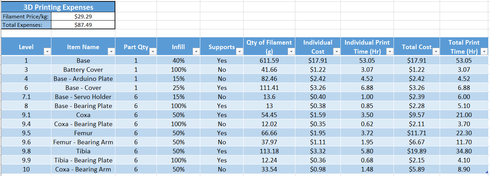
A bill of materials (BoM) has also been created, which organizes the parts by level based on the assembly and sub-assemblies. This
bill of materials, also calculates the total cost based on unit prices, which comes out to be $400.08. This is a more
accurate representation of what the Hexapod costs. The full BoM can be found here.
Possible Issues and Solutions
As with any project, it is expect that I will run into a variety of issues. As such, I have made a list of some possible
issue that I may face and the possible solution(s) to these issues.
Twitchy Servos
This is usually caused by insufficient power. If all the servos are twitchy it means, I need to provide more power
to the servos. This can be done through separating the servos into separate circuits with a common ground to ensure
sufficient power is being delivered.
Adding a high value capacitor in parallel with the servo, to ensure there is always a reservoir of power for the servo.
Check to see if any portion of my code is causing interrupts to be disabled. If yes, see if I can change the code to
avoid the disabling of interrupts. If this is not possible, a separate servo driver can be bought and used.
If after all of this, a servo is still twitchy it might just be that it is defective or that it is having trouble
holding its exact position under load. In this case, additional friction can be added to the specific joint by
replacing the bearings with a bushing to forcibly stop the twitching from happen. Later on, the servo can be replaced,
if appropriate.
Leg Collision
In certain positions, the legs can collide with other legs. This can be solved by choosing an adequate step length,
such that the legs do not move far enough to collide with each other.
Overheating Electronics
Most of the electronics should not overheat unless they are defective. The part that might experience overheating is
the voltage regulator. While it can dissipate some of that heat over short periods of time, long durations may cause
problems. If this turns out to be an issue, a fan can be installed to provide more airflow and heat dissipation.
Defective / Fried Electronics
Ensure I have spares on hand so that I can easily and quickly replace parts.
Double check circuits before powering them up, to ensure there are no short circuits or errors that might cause
harm to the electronics.
Potentially use a Electronic Fast-Acting Fuse to ensure protection against any short circuits.
Install a current sensor to monitor the current and allow for shutting down of electronics if the current draw becomes
too high.
High Impact Force on Legs
While walking, the impact force of the legs hitting the ground can cause damage to the servo's internal gears.
Overtime this can cause the servo to stop working. This can be prevented using a softer material at the end of the
legs (i.e have rubber leg tips).
Alternatively, a shock absorber (i.e. springs, dampers, rubber feet, etc.) can be installed in the legs to absorb some of
the force.
A software solution would be to make the legs slow down as it comes closer to the ground so that the impact force
is minimized as much as possible.
Tangled Wires
Each servo will have a wire that will need to be plugged into the Arduino in the main body of the Hexapod. This
means 18 separate cables going into the main body. With the movement of the legs, these wire can potentially get
tangled or even caught on other objects. To clean things up, one solution would be to use wire/cable sleeves to
bundle the cables for each leg. This way there are only 6 "cables" and as they are being held together by the
sleeve, the chances of them being tangled is reduced.
Alternatively and preferably, is to design the various leg components such that the wires travel through them. This would
not only provide protection to the wires, ensuring they can't be tangled or caught on objects, it would also allow for a
cleaner looking robot.
Leg Slip
On smooth surfaces, the legs may slip, which can cause the robot to fall especially if it is trying to climb up a
surface. To reduce this, more grip can be added to the legs, in the form of runner feet, which will have more
friction with the ground. Additionally, it will also soften some of the impact from the legs hitting the ground.
Servo Rotation Limits
When installing the servos, they need to be installed in such a way that all 180° of travel are available for
use. To do this, a helper script can be written, which moves the servo to a known position such as 90° before
installation. This way, the legs move as expected based on my calculations, without the need for offsets.
Results and Next Steps
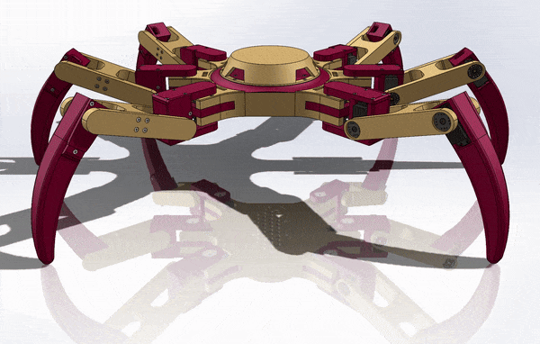
The figure on the right showcases the final CAD model for this iteration. The success of the project can be assessed by
verifying if it is meeting (or on track to meet) the design requirements set for this project. A summary of the
verification can be found in the table below. For more details on the budget
requirement, visit the corresponding section. The requirement on the robot being able to handle its own weight is still to be determined. Calculations will
be done in the near future, to ensure that the servo motors do in fact have enough torque to support its own weight. If it
is found that these servos are inadequate, one of two actions will be taken. The first being to reduce the weight of the
robot in an attempt to meet the requirement. The second being finding a servo that provides a higher torque.
Verification of design requirements:
Requirement
Pass/Fail
Justification
1. Inherently Stable
Pass
A hexapod can use its tripod gait to walk in stable manner. Other gaits such as the wave or ripple gait, still
maintains stability as it will always have at least 3 legs on the ground. As well, due to the six legs, the hexapod is
very stable when stationary.
2. At least 3 Degrees of Freedom
Pass
This robot will have six degrees of freedom, due to its six legs allowing for the platform to move in all directions.
3. Multi-Terrain
Pass
A hexapod can take advantage of its legs to maneuver various terrains.
4. Within $600
Conditional Pass
The per unit price comes out to be just over $400, which met the original requirement of $400. However, when looking
at the total amount being used to buy parts, the cost was closer to $500. This was mainly due to severely
underestimating the cost of servos. As such the budget was increased.
5. Platform for Future Hardware
Pass
The truncated cone design for the main body of the hexapod provide plenty of space for a LiDAR or Nerf Turret to be
mounted.
6. Support its own Weight
Conditional Pass
The hexapod, with its current specifications, can support its weight when at least 5 (or potentially 4) legs are on
the ground at any one point in time. However, with the current specifications, it cannot support its own weight if
a tripod gait is used. A wave gait or potentially a ripple gait will need to be used.
7. 3D Printed or Off-the-Shelf
Pass
As of right now, all parts are either Off-the-Shelf or 3D printed.
So far, quite a lot has been completed. The 3D CAD design has been completed,
a working kinematics model had been derived, and a motion study has been done to verify the kinematics and to visualize
the hexapod. However, this project is still a work in progress. As such, there are still a plenty of tasks that need to be
done. These are as follows: (Note that this list does not necessarily needed to be followed sequentially). Completed tasks
will be crossed out as they get finished.
Complete calculations to verify servo specifications meet requirements
Modify CAD model, to deal with the impact force on the legs
Simulations
Research pros/cons of Gazebo vs Webots
Learn about the chosen simulation software
Export and set up a simulation model
Use ROS to program the robot to do various task (i.e. walk, turn, climb stairs)
Start moving design into alternate software (likely Fusion360) in preparation for SolidWorks license expiration
Find a better battery
Design a better cable management system
Build at least one leg to better visualize the placement of the wires and where they can be fed through
Design new leg components with hollow compartments where the wires can be fed through
Print, build and test new leg
Iterate if needed
Design and implement integration of sensors (most likely limit switches) in the legs, to sense when it is touching
the ground. This will allow for more versatility when navigating through uneven terrain.

 One of the courses that I most enjoyed during my time at UWaterloo was MTE 544 - Autonomous Mobile Robots. It inspired
me to want to build my own mobile robot. Learning more about robotics, ROS, and autonomous navigation is one of the main
reasons behind this project. In order to do this, I would need a vehicular platform through which this learning can
be done. As well, taking into account my other interests such as nerf blasters, it would also be interesting to have a
mobile nerf turret. As such, this project would need to be a multi-terrain robotic platform, on which future projects,
whether they be a nerf turret, or an autonomous mobile robot can be built upon.
One of the courses that I most enjoyed during my time at UWaterloo was MTE 544 - Autonomous Mobile Robots. It inspired
me to want to build my own mobile robot. Learning more about robotics, ROS, and autonomous navigation is one of the main
reasons behind this project. In order to do this, I would need a vehicular platform through which this learning can
be done. As well, taking into account my other interests such as nerf blasters, it would also be interesting to have a
mobile nerf turret. As such, this project would need to be a multi-terrain robotic platform, on which future projects,
whether they be a nerf turret, or an autonomous mobile robot can be built upon.


 Based on this image, we can make the observation that the left and right side of robot are not equal due to the fact that
there is only one leg supporting the left side, while there is 2 for the right. As such, the forces on the left leg will
be higher than that on the right legs. As well, as the two legs on the right side are symmetrical in their position, we
can assume that the forces on them are similar. With these assumptions and observations, we can create a free-body diagram.
This is shown below.
Based on this image, we can make the observation that the left and right side of robot are not equal due to the fact that
there is only one leg supporting the left side, while there is 2 for the right. As such, the forces on the left leg will
be higher than that on the right legs. As well, as the two legs on the right side are symmetrical in their position, we
can assume that the forces on them are similar. With these assumptions and observations, we can create a free-body diagram.
This is shown below.
 In this diagram, Fg is the force due to gravity and is calculated based on the weight of the model in SolidWorks.
This comes out to be about 4.75 kg. This is a rough estimate, as the weights of 3D printed parts and even off the shelf
parts will vary slightly from the CAD. As well, the weight of the wires is not included in this measurement. Using this
weight the force of gravity is calculated below:
In this diagram, Fg is the force due to gravity and is calculated based on the weight of the model in SolidWorks.
This comes out to be about 4.75 kg. This is a rough estimate, as the weights of 3D printed parts and even off the shelf
parts will vary slightly from the CAD. As well, the weight of the wires is not included in this measurement. Using this
weight the force of gravity is calculated below:

 Let's start with T1, which is the moment about the joint between the femur and the tibia. First, let's make
another free-body diagram, isolating this joint. This is shown below. Note that we're only concerned about N1
as that is the bigger of the two normal forces, and since we want to know if this motor is sufficient we only care about
the largest force.
Let's start with T1, which is the moment about the joint between the femur and the tibia. First, let's make
another free-body diagram, isolating this joint. This is shown below. Note that we're only concerned about N1
as that is the bigger of the two normal forces, and since we want to know if this motor is sufficient we only care about
the largest force.